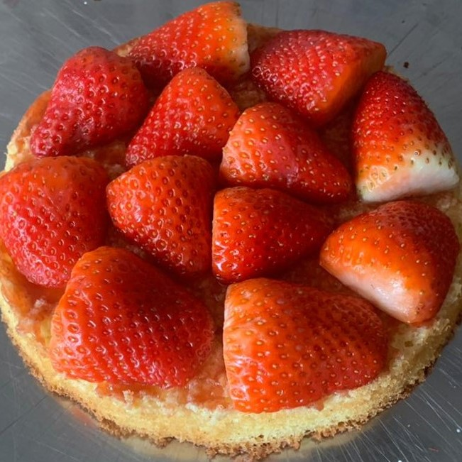

Über uns
|  |
Wir stehen dazu, die Rezepte unserer Großmütter sorgfältig zu wahren. Natürlich sind unsere saisonalen Zutaten frisch aus lokaler Lese, welche akribisch ausgewählt wurden. Bereits seit Generationen wurden und werden die verschiedensten Backkunstwerke überliefert. So ist unsere Backfamilie nun bereits mit Rezepten der 3. Generation gesegnet. |

|
Diesen Segen wollen wir mithilfe unseres Online-Shops in die weite Welt schreien.
Nicht jeder hatte das Glück eine großmütterliche Gebäckerfahrung zu machen – wir wollen,
dass jedwede Bestellung mit einem Stück vertrauter Sorglosigkeit aus Kindheitstagen
genossen wird.
|